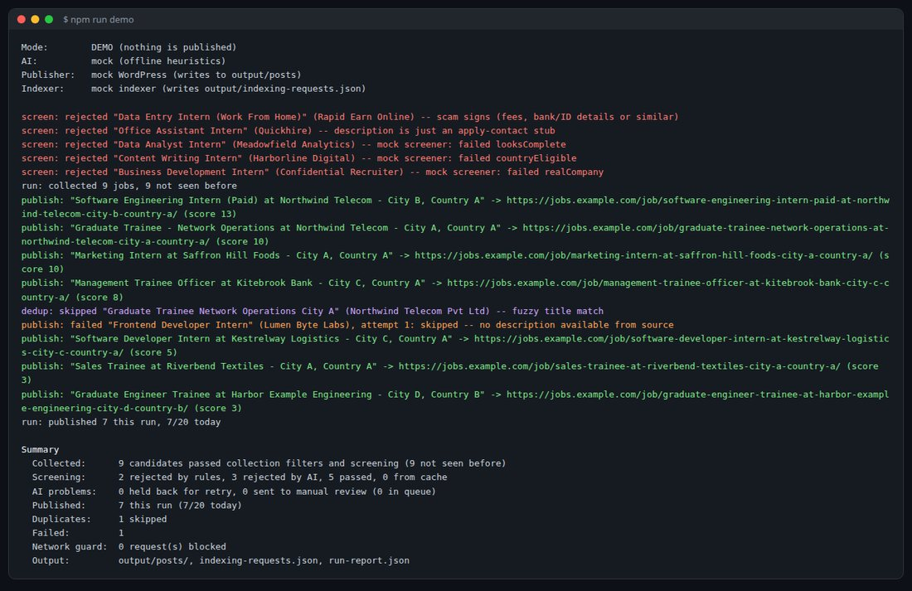
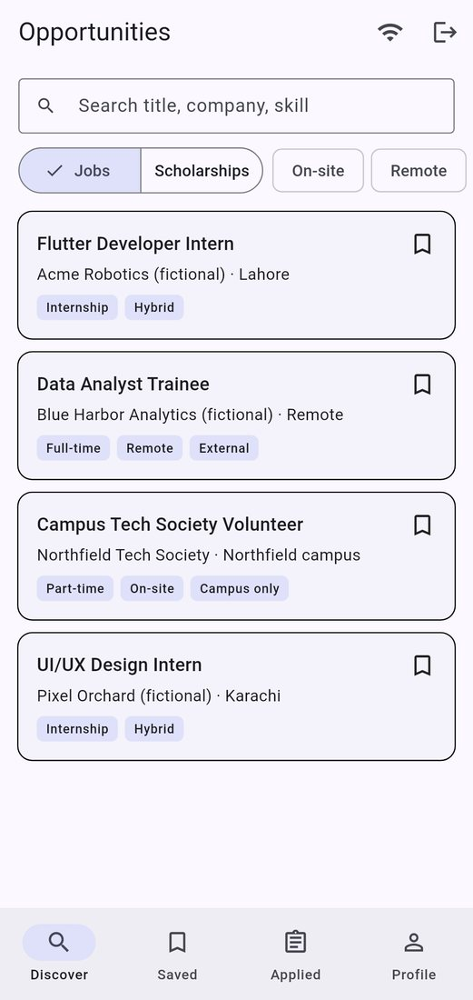
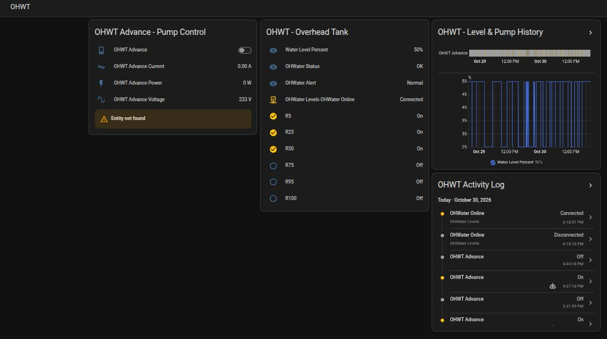
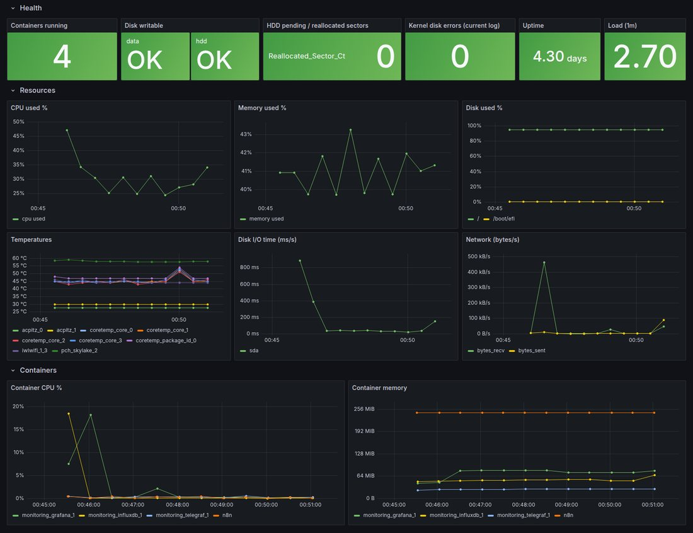

About
I like turning slow, repetitive work into systems that run on their own. At Pintern, which I co-founded, finding, checking and publishing opportunities for students used to be done by hand every day. I built the pipeline that now does it automatically, with AI screening out scams before anything goes live.
Before that, I spent 2+ years in remote operations for UK and global teams: data validation, reporting and e-commerce account management. It taught me to care about accuracy and to build things that don't break quietly.
Outside work, I run my own Linux home server and built an IoT system that controls my home's water pumps. Right now I'm learning how to train and run my own AI models.
Projects
Automated Job Posting Pipeline
Built for Pintern. Finds, verifies and publishes job listings automatically, with AI screening that catches scams and duplicates.

Pintern: Flutter App Demo
Student jobs and scholarships app with student, employer, ambassador and admin flows. Runs in your browser.

Smart Water Management IoT
A real home system that monitors two water tanks and runs the pumps automatically, with dry-run protection and phone alerts.

Home Server Monitoring
One-command monitoring for a Linux server: disk health warnings, resources and containers in one Grafana dashboard.

Experience
Co-founder & Developer
Co-founded a platform that helps students across Pakistan, Turkey and Egypt find verified internships, jobs and scholarships. Built the automated publishing pipeline, develop the Flutter app, and grew the audience to 110,000+.
Energy Campaign Specialist
Validated energy data, prepared reports and kept records accurate for a UK energy company.
E-commerce Account Manager
Managed and grew 4+ seller accounts on Daraz: listings, sales analysis, inventory and customer service.
Skills
- AI & automation
- Workflow automation, LLMs, prompt design, n8n, API integration
- Development
- Python, JavaScript / Node.js, Flutter / Dart, Firebase, SQL, Git
- Systems & IoT
- Linux, Docker, Grafana, Home Assistant, MQTT, ESP32 / ESP8266
- Business
- Digital marketing, SEO, data validation, e-commerce, remote operations
Contact
Let's work together.
Open to automation, AI integration and app development work.